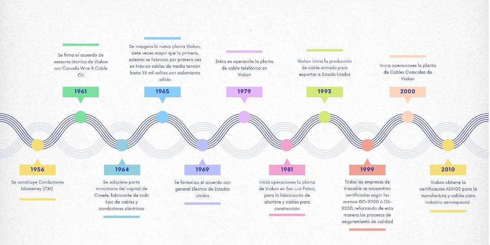
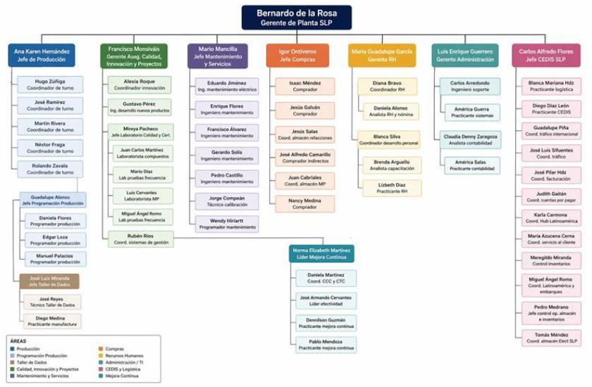
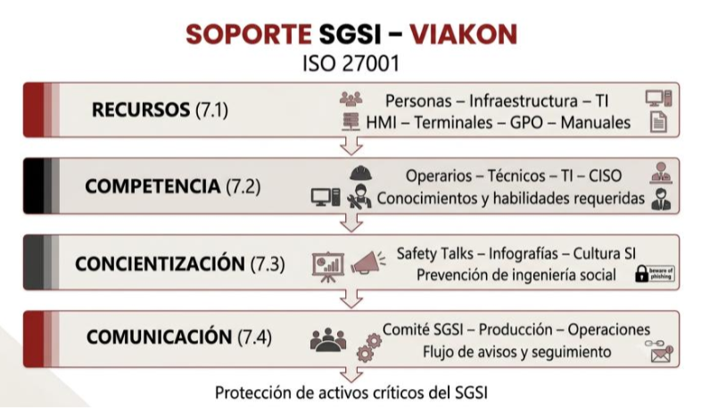
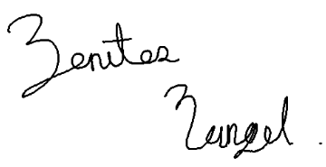
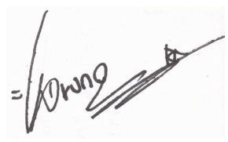
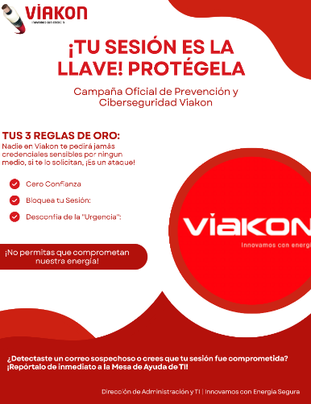

UNIVERSIDAD POLITÉCNICA DE SAN LUIS POTOSÍ
Empresa: VIAKON | Innovamos con energía
Curso: Núcleo Optativo V: Seguridad Informática
Rodríguez Moreno Cristian Alejandro | Matrícula: 181641
El propósito de este Sistema de Gestión de Seguridad de la Información (SGSI) es establecer los requisitos críticos para la protección de los activos de información gestionados por las direcciones del área de administración y TI.
Este alcance garantiza que el tratamiento de la información de los "Energizadores" cumpla con los pilares de Confidencialidad, Integridad y Disponibilidad, mitigando riesgos asociados al manejo de datos personales sensibles, registros financieros y bases de datos de los activos.
La aplicación de los requisitos de esta área se extiende a los siguientes procesos operativos y estratégicos:
Viakon es una marca Viakable, empresa del Grupo Xignux, dedicada a la fabricación y comercialización de conductores eléctricos. Somos una compañía de clase mundial que cuenta con la más avanzada tecnología para la fabricación y pruebas de nuestros productos. Ofrecemos al mercado conductores eléctricos confiables, seguros, eficientes y con una larga vida en servicio.
Viakon es una empresa con más de 70 años de experiencia, más de 5000 productos, 25 sucursales y más de 2000 empleados alrededor del mundo.
Filiales: QUIALITA ALIMENTOS, S de R.L de C.V, Protect Energy, Don Ferm MAgnekon S.A. de C.V.
Contamos con certificaciones ISO-9001 e ISO-14001 en todas las operaciones, lo que avala nuestra calidad de clase mundial.

"Transmitir energía que activa tu vida".
Ser la empresa preferida del mercado de transmisión de energía, duplicando nuestro valor y ofreciendo la mejor experiencia para nuestros clientes.
Viakable se distingue por ser una empresa íntegra con estrictos principios éticos. Sus relaciones, negocios y operaciones están basados en su código de ética y valores, esto ha logrado que los colaboradores, clientes, socios proveedores y la comunidad a su alrededor continúen depositando su total confianza en nosotros. Siempre comprometidos a actuar con apego a las leyes y los principios éticos y morales con absoluta transparencia y hablando con la verdad.
Una parte esencial de nuestra operación es la adecuada gestión de los recursos que utilizamos para producir de forma eficiente, por lo que continuamente estamos analizando e integrando iniciativas de mejora en nuestros procesos críticos y relevantes con la finalidad de mitigar el impacto ambiental de nuestras operaciones y reducir costos. Dentro de los insumos más relevantes se encuentran: consumos de agua, energía y materiales, al igual que las emisiones y residuos Un aspecto fundamental para reforzar el aprovechamiento eficiente de los recursos en Viakable es trabajar durante todo el año en la cultura de responsabilidad ambiental con nuestros colaboradores a través de campañas de concientización, talleres, eventos y actividades.
El activo más importante para el éxito de cada uno de nuestros negocios es nuestro capital humano, por esta razón mantenemos espacios de trabajo dignos, respetuosos, colaborativos y de comunicación constante en todos los lugares donde tenemos operaciones. Tenemos el compromiso de fomentar un ambiente abierto e incluyente, en el que cada colaborador se sienta altamente motivado, productivo y comprometido para impulsar su éxito personal y de la empresa, por medio de una ejecución superior, buscando siempre la mejora continua y la innovación.
Somos una empresa que busca transformar las comunidades en las que operamos, generando relaciones de ganar-ganar mediante Iniciativas Sociales, en las que participamos voluntariamente en conjunto con organizaciones de la sociedad civil. Hemos asumido también el compromiso de invertir tiempo, experiencia, conocimiento y recursos en diversas iniciativas que inciden en el mejoramiento de las condiciones de vida y desarrollo de las comunidades en las que operamos, siendo dichas iniciativas relevantes tanto para la sustentabilidad de quienes nos rodean como para nuestra organización.
Nuestro Círculo de Calidad, así como la perseverancia y constancia de nuestras participaciones como empresa, ha sido distinguida por la AMTE (Asociación Mexicana de Trabajo en Equipo A.C.), promotora de la cultura de calidad y trabajo en equipo para la Mejora Continua en México.
Además, Viakon ha sido reconocido en cuestión de investigación y desarrollo tecnológico de nuevos productos, materiales o procesos por el CONACYT.
El reconocimiento Cultura Tecnológica Empresarial se ha otorgado a tan solo 69 empresas desde 2001 por sus actividades de investigación y desarrollo.
La cultura de trabajo en Viakon también es reconocida. Clientes como Montoi y Soriana nos han distinguido en más de una ocasión como Proveedor Confiable.
Viakon fue reconocido por haber logrado en 10 ocasiones la participación de sus equipos como finalistas de los Concursos Nacionales de Equipo de Trabajo. El premio lleva el nombre del Dr. Mitsunori Nakano, un experto y entusiasta promotor, patrocinador e impulsor de estos Concursos.
Desde sus inicios, Viakon ha sostenido invariablemente su voluntad de mantenerse como pionero y líder de la industria.
Como compañía de clase mundial, Viakon cuenta con la más avanzada tecnología para la fabricación y pruebas de sus productos, lo cual le permite ofrecer al mercado conductores eléctricos confiables, seguros, eficientes y con una larga vida en servicio. A nivel nacional e internacional, los productos de viakon cuentan con la certificación de los organismos más prestigiados del mundo ya que son capaces de satisfacer las especificaciones más exigentes.
Entre estos certificados se encuentra:
Mejora continua para satisfacer y exceder los requerimientos de los clientes externos e internos.
En Viakon, empresa dedicada a la manufactura de conductores eléctricos, estamos comprometidos en proporcionar productos y servicios que satisfagan los requerimientos de nuestros clientes y de nuestras partes interesadas, generando acciones para eficientizar nuestros recursos, proteger el medio ambiente, prevenir y reducir la contaminación, los riesgos laborales, la eliminación de peligros y la prevención de enfermedades laborales, estableciendo condiciones de trabajo seguras, saludables y libre de lesiones que deterioren la salud de nuestros Energizadores, tomando en cuenta la consulta y participación de trabajadores y representantes, cumpliendo con la normatividad aplicable, respetando los valores establecidos por la organización, a través de la mejora continua de nuestros Sistemas de Gestión, de nuestros procesos y de nuestro Sistema Operativo CTX.

El organigrama corresponde a la estructura organizacional de una planta en San Luis Potosí (SLP), encabezada por Bernardo de la Rosa (Gerente de Planta SLP).
La organización se divide en 7 líneas de reporte directo (gerencias y jefaturas), las cuales se subdividen en 10 áreas funcionales según la nomenclatura de colores:
Esta área está bajo la dirección de Luis Enrique Guerrero (Gerente Administración). El departamento unifica dos funciones críticas para la planta: el soporte tecnológico (Sistemas) y la gestión financiera interna (Contabilidad).
Su estructura es plana y cuenta con cuatro reportes directos, organizados en dos parejas de analista/ingeniero y practicante:
Encargada del soporte técnico y el mantenimiento de los sistemas de la planta.
Encargada del control financiero y contable local.
En esta sección se establece el marco normativo internacional aplicable al Sistema de Gestión de Seguridad de la Información (SGSI) implementado para la Dirección de Administración y Tecnologías de la Información (TI) de Viakon. Las referencias aquí citadas constituyen la columna vertebral metodológica para proteger los procesos transaccionales del ERP Corporativo (SAP/Oracle), la infraestructura de red, y las bases de datos que albergan la propiedad intelectual y los datos personales de los "Energizadores".
Para las referencias fechadas, únicamente es aplicable la edición citada. Para referencias no fechadas, se aplicará la última edición vigente, incluyendo enmiendas y actualizaciones emitidas por la Organización Internacional de Normalización (ISO) y la Comisión Electrotécnica Internacional (IEC).
ISO/IEC 27001:2022 - Sistemas de Gestión de Seguridad de la Información - Requisitos.
Constituye el estándar base y certificable del presente proyecto. En lugar de ofrecer metodologías rígidas, esta norma dicta los requisitos indispensables para establecer, implementar, mantener y mejorar continuamente el SGSI.
Aplicación en Viakon: Se utiliza como la hoja de ruta directiva para estructurar las políticas de TI, definir el alcance (Cláusula 4), comprometer a la Alta Dirección (Cláusula 5) y establecer las métricas de evaluación de desempeño que protegen el flujo de las operaciones de manufactura y administración financiera.
Para dar cumplimiento a los requisitos exigidos por la norma base, el SGSI de Viakon se apoya metodológicamente en las siguientes normas para la mitigación de vulnerabilidades y el tratamiento del riesgo:
Esta norma funciona como el catálogo de buenas prácticas y directrices para implementar las medidas de seguridad exigidas en el Anexo A de ISO 27001.
Aplicación en Viakon: Guía la configuración técnica de nuestros activos. Por ejemplo, se utiliza para dictaminar las reglas de complejidad de contraseñas, la habilitación de Autenticación Multifactorial (MFA) en el Directorio Activo, y la segmentación de nuestras VLANs corporativas para evitar accesos no autorizados al ERP.
Establece las directrices para la identificación, análisis, evaluación y tratamiento de los riesgos cibernéticos, traduciendo amenazas técnicas en impacto de negocio.
Aplicación en Viakon: Es la metodología utilizada por el Comité de Seguridad para calcular el impacto financiero y operativo ante la posibilidad de un ataque de Ransomware o el secuestro de sesión, determinando qué riesgos son aceptables y cuáles exigen presupuesto inmediato para remediación.
Dado el entorno híbrido de TI y la naturaleza de los datos procesados en la organización, el SGSI integra lineamientos de las siguientes normas especializadas de la familia ISO/IEC 27000:
Aplicación en Viakon: Estandariza la terminología corporativa. Asegura que tanto la Alta Dirección (Grupo Xignux) como los operarios entiendan bajo el mismo rigor técnico conceptos como "Disponibilidad", "Confidencialidad", "Amenaza" o "Vulnerabilidad".
Aplicación en Viakon: Ante la integración de nuestros repositorios y sistemas SaaS/PaaS, esta norma nos dicta las responsabilidades compartidas con nuestros proveedores de nube, asegurando que la información financiera y operativa fuera del Data Center (DCN Tower) esté cifrada y protegida.
Aplicación en Viakon: Esencial para el cumplimiento legal. TI administra bases de datos con Identidad Personal (PII) de más de 2,000 Energizadores. Esta norma nos permite establecer controles para prevenir brechas de privacidad y cumplir con la Ley Federal de Protección de Datos Personales en Posesión de los Particulares (LFPDPPP), mitigando el riesgo de multas ante el INAI.
Aplicación en Viakon: Define las fases de preparación, detección, respuesta y aprendizaje post-incidente. Fue la base normativa utilizada por nuestro Equipo de Respuesta a Incidentes (CSIRT) para contener recientes amenazas de intrusión e implementar acciones de mejora continua.
Para fines de la presente implementación en Viakon, los siguientes términos fundamentales se agrupan por su función dentro del ciclo de vida del Sistema de Gestión de Seguridad de la Información (SGSI).
Para garantizar la transparencia, legalidad y el nulo impacto a las operaciones críticas de Viakon durante la implementación y auditoría del SGSI, se establecen las siguientes condiciones de intervención:
Toda la información recabada durante la auditoría (logs de red, configuraciones del ERP SAP/Oracle, arquitecturas de Active Directory y datos personales de los Energizadores) está sujeta a un estricto Acuerdo de Confidencialidad (NDA).
| Código | Activo de Información (Nombre Original) | Propietario / Ubicación | Proceso Asociado | Responsable Operativo | Dependencia Tecnológica | Clasificación CID |
|---|---|---|---|---|---|---|
| ACT-INT-01 | Bases de datos | Gerente de TI/CPD principal | Gestión de datos críticos | Administrador de BD | Servidores, SAN (ej. SQL Server) | C: Alta | I: Alta | D: Alta |
| ACT-INT-02 | Programa de capacitación (herramientas y rutas) | Gerente de RRHH/LMS interno | Capacitación continua | Coordinador de capacitación | Plataforma e-learning, Intranet | C: Media | I: Media | D: Media |
| ACT-INT-03 | Software de monitoreo de red y servidores | Gerente de Seguridad TI / Consola central NOC | Monitoreo de infraestructura | Analista de monitoreo | Servidores, switches, firewalls | C: Media | I: Alta | D: Alta |
| ACT-INT-04 | Registros de usuarios y credenciales | Gerente de Seguridad TI / Directorio activo / SIAM | Control de acceso | Administrador de identidades | Servidores de dominio, MFA | C: Alta | I: Alta | D: Alta |
| ACT-INT-05 | Impresoras empresariales | Gerente de Operaciones / Oficinas y planta | Impresión de documentos | Soporte TI | Red LAN, suministro eléctrico | C: Media | I: Media | D: Media |
| ACT-INT-06 | Equipos de cómputo | Gerente de TI / Estaciones de trabajo | Operaciones diarias | Usuario final / Soporte TI | Red, servidores, antivirus | C: Media | I: Media | D: Media |
| ACT-INT-07 | Herramientas de administración remota | Gerente de Seguridad TI / Servidor de gestión | Soporte remoto | Administrador de sistemas | VPN, firewalls, autenticación | C: Alta | I: Alta | D: Alta |
| ACT-INT-08 | Servidores físicos y virtuales | Gerente de TI/CPD/Hipervisor | Procesamiento central | Arquitecto de sistemas | SAN, switches, UPS, HVAC | C: Alta | I: Alta | D: Alta |
| ACT-INT-09 | Intranet | Gerente de Comunicaciones / Portal interno | Comunicación interna | Webmaster | Servidores web, DNS interno | C: Media | I: Media | D: Media |
| ACT-INT-10 | ERPs corporativos | Gerente de TI/CPD/ Nube | Gestión integral del negocio | Líder funcional ERP | Servidores, BD, red, backup | C: Alta | I: Alta | D: Alta |
| ACT-INT-11 | Documentación y procesos | Gerente de Calidad / Repositorio documental | Gestión de la calidad | Documentador | Intranet, control de versiones | C: Media | I: Alta | D: Media |
| ACT-INT-12 | Firewalls y dispositivos de seguridad perimetral | Gerente de Seguridad TI / Perímetro de red | Seguridad perimetral | Ingeniero de seguridad | ISP, switches de core | C: Alta | I: Alta | D: Alta |
| ACT-INT-13 | Sistemas de respaldo y recuperación (Backup) | Gerente de TI / CPD + nube | Respaldo y DRP | Administrador de backup | Almacenamiento, red, software | C: Alta | I: Alta | D: Alta |
| ACT-INT-14 | Conmutadores (Switches) y puntos de acceso Wi-Fi | Gerente de TI / Racks y áreas comunes | Conectividad LAN/WLAN | Ingeniero de redes | Fibra óptica, cableado, PoE | C: Media | I: Alta | D: Alta |
| ACT-INT-15 | Software antivirus y EDR (Endpoint Detection and Response) | Gerente de Seguridad TI / Todos los endpoints | Protección de endpoints | Analista de ciberseguridad | Consola central, servidor act. | C: Media | I: Alta | D: Media |
| ACT-INT-16 | Certificados digitales y llaves criptográficas | Gerente de Seguridad TI / HSM / Repositorio seguro | Cifrado y autenticación | Criptógrafo | Servidores, PKI, HSM | C: Alta | I: Alta | D: Media |
| ACT-INT-17 | Consolas de gestión de parches y actualizaciones | Gerente de TI / Servidor de administración | Actualización de software | Ingeniero de sistemas | Repositorio WSUS/SCCM, red | C: Media | I: Media | D: Media |
| ACT-INT-18 | Sistemas de almacenamiento masivo (SAN/NAS) | Gerente de TI/CPD | Almacenamiento compartido | Administrador de almacenamiento | Fibre Channel, switches, HDD/SSD | C: Alta | I: Alta | D: Alta |
| ACT-INT-19 | Repositorios de scripts y código fuente | Gerente de Desarrollo / Git/Servidor interno | Automatización y desarrollo | Líder de desarrollo | Servidores, control de versiones | C: Alta | I: Alta | D: Media |
| ACT-INT-20 | Plan de Continuidad del Negocio y Recuperación de Desastres (BCP/DRP) | Gerente de Riesgos / Portal de gobierno | Respuesta a emergencias | Comité de crisis | Almacenamiento ext., comunicaciones | C: Alta | I: Alta | D: Alta |
| Código | Activo de Información (Nombre Original) | Propietario / Ubicación | Proceso Asociado | Responsable Operativo | Dependencia Tecnológica | Clasificación CID |
|---|---|---|---|---|---|---|
| ACT-EXT-01 | Servicios de Nube (SaaS/PaaS) | Gerente de TI / Nube (Azure / AWS) | Productividad y colaboración | Arquitecto de nube | Internet, API, SSO | C: Alta | I: Alta | D: Media |
| ACT-EXT-02 | Enlaces de Internet (ISPs) | Gerente de TI/ Infraestructura del ISP | Conectividad WAN | Ingeniero de redes | Routers, fibra óptica, módems | C: Media | I: Alta | D: Alta |
| ACT-EXT-03 | Proveedores de Hosting Web | Gerente de Marketing / Datacenter del proveedor | Presencia digital | Webmaster | DNS, CDN, servidores web | C: Media | I: Media | D: Media |
| ACT-EXT-04 | Enlaces de Comunicación Dedicados | Gerente de TI / Red MPLS/ fibra dedicada | Comunicación inter-sedes | Ingeniero de redes | Routers, switches, VLAN | C: Media | I: Alta | D: Alta |
| ACT-EXT-05 | Plataformas de Mensajería y Videoconferencia | Gerente de Comunicaciones / Nube del proveedor | Comunicación remota | Admin. de colaboración | Internet, micrófonos, cámaras | C: Media | I: Media | D: Media |
| ACT-EXT-06 | APIs de Servicios Financieros | Gerente de Finanzas / Servidores del banco / SAT | Facturación y pagos | Tesorero | Internet, certificados, tokens | C: Alta | I: Alta | D: Alta |
| ACT-EXT-07 | Servicios de Soporte Técnico de Fabricantes | Gerente de TI / Centro de soporte del fabricante | Mantenimiento de hardware | Administrador de activos | Contrato de soporte, acceso remoto | C: Media | I: Media | D: Media |
| ACT-EXT-08 | Nube de Respaldo (Cloud Backup) | Gerente de TI / Nube (proveedor de backup) | Respaldo y DRP | Administrador de backup | Internet, API, ancho de banda | C: Alta | I: Alta | D: Alta |
| ACT-EXT-09 | Herramientas de Diseño y Prototipado en la Nube | Gerente de Marketing / Nube del proveedor | Diseño gráfico y UX | Diseñador senior | Internet, navegador, GPU remota | C: Media | I: Media | D: Media |
| ACT-EXT-10 | Proveedores de Ciberinteligencia | Gerente de Seguridad TI / Plataforma del proveedor | Monitoreo de amenazas | Analista de ciberseguridad | Internet, API, SIEM | C: Media | I: Alta | D: Media |
| ACT-EXT-11 | Gestores de Dominios (DNS) | Gerente de TI / Plataforma DNS | Resolución de nombres | Ingeniero de redes | Internet, registros DNS, SSL | C: Media | I: Alta | D: Alta |
| ACT-EXT-12 | Bases de Datos de Normativas Externas | Gerente de Calidad / Portales gubernamentales | Cumplimiento normativo | Auditor de calidad | Internet, navegador, credenciales | C: Media | I: Media | D: Media |
| ACT-EXT-13 | Plataformas de Reclutamiento y Selección | Gerente de RRHH / Nube del proveedor | Reclutamiento y selección | Reclutador | Internet, correo electrónico | C: Media | I: Media | D: Media |
| ACT-EXT-14 | Sistemas de Monitoreo de Logística (GPS) | Gerente de Logística / Nube del proveedor GPS | Distribución y entregas | Coordinador de logística | Internet, GPS, red celular | C: Media | I: Media | D: Alta |
| ACT-EXT-15 | Servicios de Auditoría de Ciberseguridad Externos | Gerente de Seguridad TI / Oficinas de la consultora | Auditoría y cumplimiento | Auditor externo / Hacker | Acceso remoto, NDA, pentesting | C: Alta | I: Alta | D: Media |
| ACT-EXT-16 | Nodos de Distribución de Contenido (CDN) | Gerente de TI / Red global CDN | Entrega de contenido | Ingeniero de redes | DNS, servidores web, caché | C: Media | I: Media | D: Alta |
| ACT-EXT-17 | Sistemas de Verificación de Identidad de Terceros | Gerente de Seguridad TI / Nube del proveedor MFA | Control de acceso | Administrador de identidades | Internet, App MFA, SSO | C: Alta | I: Alta | D: Alta |
| ACT-EXT-18 | Plataformas de Capacitación Externa (E-learning) | Gerente de RRHH / Nube del proveedor | Capacitación continua | Coordinador de capacitación | Internet, LMS, navegador | C: Media | I: Media | D: Media |
| ACT-EXT-19 | Infraestructura de Centros de Datos de Terceros | Gerente de TI / Datacenter del proveedor | Alojamiento de servidores | Arq. de infraestructura | Enlace, UPS, HVAC, seguridad física | C: Alta | I: Alta | D: Alta |
| ACT-EXT-20 | Canales de Redes Sociales Corporativas | Gerente de Marketing / Plataformas sociales | Marketing y comunicación | Community manager | Internet, credenciales, gestor R.S. | C: Media | I: Media | D: Media |
Establecer el marco de referencia para la protección de los activos de información de Viakon, garantizando la Confidencialidad (que solo los autorizados accedan), Integridad (que la información no sea alterada) y Disponibilidad (que esté lista cuando se necesite). Se busca mitigar riesgos ante amenazas internas y externas, asegurar el cumplimiento legal (como la Ley de Protección de Datos) y consolidar la seguridad como un valor cultural en la organización para el cumplimiento de sus objetivos estratégicos.
Esta política es de cumplimiento obligatorio para todo el personal interno, prestadores de servicios, proveedores y socios comerciales. El alcance técnico comprende la totalidad del ecosistema de información: desde la infraestructura física (servidores, oficinas) hasta los activos lógicos (bases de datos, software, nube).
La Alta Dirección asume la responsabilidad de liderar el SGSI mediante:
Para asegurar el cumplimiento de las políticas previamente descritas, se define la siguiente matriz de asignación de roles.
| Actividad/Proceso | Director de TI (CIO) | Oficial de Seguridad (CISO) | Administrador de Sistemas | Usuario Final/Empleado | Proveedor Externo |
|---|---|---|---|---|---|
| Activos Internos | |||||
| Gestión de Bases de Datos | A | C | R | ||
| Mantenimiento de ERP | A | R | C | C | |
| Monitoreo de Red | A | R | C | ||
| Cambio de Contraseñas | A | C | R | ||
| Impresión Segura | C | A | R | ||
| Cifrado de Laptops | A | C | R | ||
| Administración Remota | A | R | C | ||
| Respaldo de Servidores | A | R | C | ||
| Publicación en Intranet | I | A | R | ||
| Clasificación de Documentos | A | R | |||
| Activos Externos | |||||
| Servicios de Nube SaaS/PaaS | A | C | R | C | |
| Enlaces de Internet ISPs | A | R | C | ||
| Proveedores de Hosting Web | A | C | R | C | |
| Plataformas de Mensajería y Videoconferencia | A | R | C | ||
| APIs de Servicios Financieros | A | C | R | C | |
| Servicios de Soporte Técnico de Fabricantes | I | A | R | R | |
| Nube de Respaldo (Cloud Backup) | A | C | R | C | |
| Gestores de Dominios DNS | A | C | R | ||
| Plataformas de Reclutamiento y Selección | C | R | |||
| Canales de Redes Sociales Corporativas | I | C | R | R | C |
| Activo Afectado y Política Relacionada | Amenaza | Vulnerabilidad | Consecuencia |
|---|---|---|---|
| 1. Base de Datos (Política: Base de Datos) | Exfiltración o alteración maliciosa de información estructurada crítica. | Ausencia de algoritmos criptográficos a nivel de columna y falta de MFA. | Pérdida de confidencialidad de datos maestros y registros contables. |
| 2. ERP SAP/Oracle (Política: ERP Corporativo) | Manipulación no autorizada de transacciones contables o fiscales. | Falta de revisión periódica en la segregación de funciones (SOD). | Fraude financiero interno, errores de timbrado de CFDI y multas. |
| 3. Monitoreo de Red (Política: Monitoreo de Red) | Alteración maliciosa de umbrales de alerta o visibilidad de tráfico. | Accesos administrativos expuestos sin restricción IP ni MFA forzado. | Ceguera operativa de TI ante ciberataques incidentes o caídas de red. |
| 4. Credenciales (Política: Registros de Usuarios) | Secuestro de sesión, phishing o fuerza bruta. | Uso de contraseñas de baja entropía y falta de almacenes centralizados. | Compromiso de identidades legítimas y libre movimiento lateral en la red. |
| 5. Impresoras (Política: Impresoras) | Fuga o intercepción de documentación en formato físico clasificado. | Impresión directa automatizada sin validación y almacenamiento en caché local. | Acceso no autorizado de terceros a datos corporativos residuales. |
| 6. Laptops (Política: Equipos de Cómputo) | Compromiso lógico o físico de endpoints por robo, pérdida o malware. | Discos locales expuestos sin cifrar y uso de redes públicas sin túnel. | Fuga masiva de propiedad intelectual y acceso ilegítimo al perímetro. |
| 7. Administración Remota (Política: Herramientas Remotas) | Establecimiento de conexiones externas maliciosas (Backdoors). | Consolas activas sin túnel seguro e inactividad de sesión prolongada. | Toma de control técnico total de servidores y computadoras por atacantes. |
| 8. Servidores (Política: Servidores Físicos/Virtuales) | Compromiso sistémico de la infraestructura central y ransomware. | Omisión de bastionado operativo y segmentación de red laxa. | Interrupción total de los servicios operativos de manufactura y ERP. |
| 9. Intranet (Política: Intranet) | Intercepción de tráfico confidencial interno corporativo. | Uso de protocolos HTTP no cifrados y accesos externos permitidos. | Filtración hacia el internet de directrices estratégicas o manuales privados. |
| 10. Documentación (Política: Documentación y Procesos) | Alteración, filtración o pérdida del know-how y propiedad intelectual. | Falta de marcas de agua dinámicas, digitalización o inventarios oficiales. | Pérdida de continuidad operativa e incumplimientos graves de calidad ISO. |
| 11. Servicios Nube (Política: Servicios SaaS/PaaS) | Robo de cuentas en la nube o fugas de datos en plataformas de terceros. | Autenticación basada en factores únicos y falta de auditorías al proveedor. | Compromiso de comunicaciones corporativas y herramientas del sector eléctrico. |
| 12. Enlaces ISP (Política: Enlaces de Internet) | Ataques volumétricos de Denegación de Servicio (DDoS) o cortes de línea. | Carencia de firewalls perimetrales avanzados y enlaces redundantes. | Aislamiento digital de la empresa, pérdida de conectividad con clientes y paros. |
| 13. Hosting Web (Política: Proveedores Hosting) | Modificación fraudulenta de la web pública o explotación de fallos OWASP. | Servidores sin Web Application Firewall (WAF) y omisión de parches. | Daño a la reputación digital pública e interceptación de datos de clientes. |
| 14. Videoconferencias (Política: Plataformas de Mensajería) | Intercepción o intrusión de terceros no autorizados en reuniones. | Compartición de URLs públicas sin contraseña ni control de accesos. | Fuga de información altamente confidencial sobre estrategias o personal. |
| 15. APIs Financieras (Política: APIs Financieras) | Robo de tokens lógicos o consumo fraudulento de servicios financieros. | Autenticación básica desactualizada y falta de restricciones por IP. | Alteración en conciliaciones, afectaciones contables y facturación falsa. |
| 16. Soporte Técnico (Política: Soporte de Fabricantes) | Uso indebido o malicioso de privilegios delegados a terceros externos. | Accesos remotos sin supervisión sincrónica ni bitácoras formalizadas. | Modificaciones operativas no autorizadas o implantación de brechas en planta. |
| 17. Cloud Backup (Política: Nube de Respaldo) | Pérdida, secuestro corrupción de los respaldos de información remotos. | Datos en tránsito sin cifrar y ausencia de pruebas periódicas de recuperación. | Imposibilidad de restaurar la operación del negocio ante incidentes catastróficos. |
| 18. DNS (Política: Gestores de Dominios) | Secuestro de dominios o suplantación de identidad digital. | Ausencia de extensiones DNSSEC y falta de MFA en el panel registrador. | Redirección maliciosa de clientes y empleados hacia entornos fraudulentos. |
| 19. Reclutamiento (Política: Plataformas de Reclutamiento) | Exposición, robo o filtración accidental de datos personales de aspirantes. | Recolección excesiva de Datos Personales de Identidad Personal (PII) y retención laxa. | Sanciones legales, multas millonarias por el INAI e incumplimiento de la LFPDPPP. |
| 20. Redes Sociales (Política: Canales Redes Sociales) | Uso fraudulento, hackeo de cuentas corporativas oficiales o desinformación. | Credenciales compartidas de forma directa y falta de gestión centralizada. | Daño reputacional severo a la marca corporativa de Viakon ante el mercado. |
| Índice | Valor |
|---|---|
| MUY BAJO (INSIGNIFICANTE) | 1 |
| BAJO (MENOR) | 2 |
| MODERADO (SIGNIFICATIVO) | 3 |
| PROBABLE (MAYOR) | 4 |
| CASI SEGURO (SEVERO) | 5 |
La estrategia de administración está directamente afectada por el rango del riesgo de cada activo, lo que implica contar con una estrategia correspondiente al nivel del Riesgo.
| Rango de Riesgo | Nivel de Riesgo | Estrategia de Administración |
|---|---|---|
| 1 a 4 | Bajo | Aceptar: Monitorear periódicamente sin inversión de recursos adicionales. |
| 5 a 9 | Medio | Mitigar / Transferir: Aplicar controles operativos estándar o seguros. |
| 10 a 14 | Alto | Mitigar: Implementar controles técnicos prioritarios en el corto plazo. |
| 15 a 19 | Muy Alto | Mitigar / Evitar: Intervención inmediata; rediseño de procesos o infraestructura. |
| 20 a 25 | Extremo | Eliminar / Mitigar Crítico: Detener o modificar la actividad de riesgo de inmediato; aplicar controles de seguridad avanzados de forma obligatoria. |
| Activo Afectado y Política Relacionada | P | I | R | Nivel de Riesgo | Estrategia de Administración |
|---|---|---|---|---|---|
| 1. Base de Datos (Política Base de Datos) | 4 | 5 | 20 | Extremo | Eliminar / Mitigar |
| 2. ERP SAP/Oracle (Política ERP Corporativo) | 3 | 5 | 15 | Muy Alto | Mitigar |
| 3. Monitoreo de Red (Política Monitoreo de Red) | 3 | 4 | 12 | Alto | Mitigar |
| 4. Credenciales (Política Registros de Usuarios) | 5 | 5 | 25 | Extremo | Eliminar / Mitigar |
| 5. Impresoras (Política Impresoras) | 3 | 3 | 9 | Medio | Mitigar |
| 6. Laptops (Política Equipos de Cómputo) | 4 | 4 | 16 | Muy Alto | Mitigar |
| 7. Admón. Remota (Política Herramientas Remotas) | 4 | 5 | 20 | Extremo | Eliminar / Mitigar |
| 8. Servidores (Política Servidores Físicos/Virtuales) | 3 | 5 | 15 | Muy Alto | Mitigar |
| 9. Intranet (Política Intranet) | 3 | 4 | 12 | Alto | Mitigar |
| 10. Documentación (Política Documentación y Procesos) | 3 | 4 | 12 | Alto | Mitigar |
| 11. Servicios Nube (Política Servicios SaaS/PaaS) | 4 | 5 | 20 | Extremo | Eliminar / Mitigar |
| 12. Enlaces ISP (Política Enlaces de Internet) | 3 | 4 | 12 | Alto | Mitigar / Transferir |
| 13. Hosting Web (Política Proveedores Hosting) | 4 | 5 | 20 | Extremo | Mitigar |
| 14. Videoconferencias (Política Plataformas de Mensajería) | 2 | 3 | 6 | Medio | Mitigar |
| 15. APIs Financieras (Política APIs Financieras) | 2 | 5 | 10 | Alto | Eliminar / Mitigar |
| 16. Soporte Técnico (Política Soporte de Fabricantes) | 3 | 4 | 12 | Alto | Mitigar |
| 17. Cloud Backup (Política Nube de Respaldo) | 3 | 5 | 15 | Muy Alto | Mitigar |
| 18. DNS (Política Gestores de Dominios) | 4 | 5 | 20 | Extremo | Eliminar / Mitigar |
| 19. Reclutamiento (Política Plataformas de Reclutamiento) | 3 | 4 | 12 | Alto | Mitigar |
| 20. Redes Sociales (Política Canales Redes Sociales) | 2 | 4 | 8 | Medio | Mitigar |
| 05- SEVERO | 05 | 10. APIs Financieras | 15. ERP, Servidores, Cloud Backup | 20. Base de datos, Administración remota, Servicios en la nube, Hosting web, DNS | 25. Credenciales |
|---|---|---|---|---|---|
| 04- MAYOR | 04 | 08. Redes Sociales | 12. Red, Intranet, Documentación/procesos, Enlaces ISP, Soporte, Reclutamiento | 16. Equipos de Cómputo | 20 |
| 03- SIGNIFICATIVO | 03 | 06. Videoconferencias | 09. Impresoras | 12 | 15 |
| 02- MENOR | 02 | 04 | 06 | 08 | 10 |
| 01- INSIGNIFICANTE | 01 | 02 | 03 | 04 | 05 |
| 01 | 02 | 03 | 04 | 05 |
| Activo Afectado y Política Relacionada | Explicación del Mecanismo de Control y Clasificación |
|---|---|
| 1. Base de Datos (Política Base de Datos) | Cifrado AES-256 en columnas sensibles y MFA administrativo (Preventivo); Monitoreo de consultas anómalas en SIEM (Detectivo); respaldos cada 4 horas (Correctivo). |
| 2. ERP SAP/Oracle (Política ERP Corporativo) | Autenticación robusta de doble factor y segregación de perfiles (Preventivo); flujos de aprobación gerencial (Preventivo); cierre automático de sesión por inactividad (Preventivo). |
| 3. Monitoreo de Red (Política Monitoreo de Red) | Whitelisting de IPs administrativas y MFA obligado (Preventivo); bitácoras y registros de cambios en la topología (Detectivo); retención inmutable de logs syslog por 6 meses (Detectivo). |
| 4. Credenciales (Política Registros de Usuarios) | Longitud mínima de 12 caracteres y cambio obligatorio cada 90 días (Preventivo); despliegue de gestor de contraseñas corporativo (Preventivo); validación de identidad en reseteos (Correctivo). |
| 5. Impresoras (Política Impresoras) | Retención de trabajos de impresión mediante liberación por tarjeta RFID o PIN (Preventivo); concientización de impresión selectiva (Preventivo); purga manual/automatizada de la memoria caché (Correctivo). |
| 6. Laptops (Política Equipos de Cómputo) | Cifrado Full Disk (FDE) vía TPM 2.0 y uso obligado de túnel VPN corporativo (Preventivo); agentes antivirus/EDR en endpoints (Preventivo/Detectivo); ejecución remota de protocolo de borrado técnico Kill Pill (Correctivo). |
| 7. Admón. Remota (Política Herramientas Remotas) | Conexión remota permitida únicamente bajo canal cifrado VPN corporativo (Preventivo); desconexión forzada tras 10 minutos de inactividad (Preventivo); supervisión obligatoria en pantalla por el usuario final (Detectivo). |
| 8. Servidores (Política Servidores Físicos/Virtuales) | Restricción física mediante biometría y aplicación de guías de bastionado CIS (Preventivo); aislamiento lógico de servicios críticos mediante VLANs (Preventivo); ejecución de copias semanales completas (Correctivo). |
| 9. Intranet (Política Intranet) | Cifrado forzado en tránsito mediante protocolo HTTPS bajo HSTS y bloqueo externo por defecto (Preventivo); validación mensual de vigencia por dueños de proceso (Detectivo); control transaccional e historial en CMS (Detectivo). |
| 10. Documentación (Política Documentación y Procesos) | Registro mandatorio en inventario maestro oficial y etiquetado con marcas de agua de confidencialidad (Preventivo); digitalización de archivos físicos (Preventivo); flujo formal de desclasificación y destrucción segura (Correctivo). |
| 11. Servicios Nube (Política Servicios SaaS/PaaS) | Federación de identidad (SSO), cifrado TLS y MFA obligatorio (Preventivo); procesos institucionales de altas/bajas gobernados por TI (Preventivo); evaluación de informes de cumplimiento SOC 2/ISO 27001 (Detectivo); revisión trimestral de accesos (Detectivo). |
| 12. Enlaces ISP (Política Enlaces de Internet) | Inspección profunda de paquetes (DPI) vía firewalls perimetrales y redundancia física con ruteo dinámico BGP (Preventivo); monitoreo 24/7 de ancho de banda (Detectivo); contratos SLA Anti-DDoS y protocolos de escalamiento ante caídas (Correctivo). |
| 13. Hosting Web (Política Proveedores Hosting) | Certificados SSL/TLS vigentes e implementación activa de un firewall de aplicación WAF (Preventivo); actualización periódica de parches y plugins (Preventivo); escaneo automatizado mensual de vulnerabilidades (Detectivo). |
| 14. Videoconferencias (Política Plataformas de Mensajería) | Uso obligatorio de cuentas institucionales federadas con MFA y geobloqueos (Preventivo); inhabilitación por completo de enlaces públicos anónimos (Preventivo); configuración de reuniones con sala de espera y validación de participantes (Detectivo). |
| 15. APIs Financieras (Política APIs Financieras) | Autenticación robusta basada en OAuth 2.0 / Mutual TLS y rotación de llaves (Preventivo); whitelisting estricto de IPs consumidoras a nivel Gateway (Preventivo); logs centralizados e inmutables bajo política WORM por 1 año (Detectivo). |
| 16. Soporte Técnico (Política Soporte de Fabricantes) | Accesos únicamente por VPNs SSL limitadas a través de Bastion Hosts y aprobación formal previa (Preventivo); supervisión obligatoria en tiempo real (Shadowing) (Detectivo); grabación integral en video e historial inmutable de comandos (Detectivo). |
| 17. Cloud Backup (Política Nube de Respaldo) | Cifrado de extremo a extremo (E2EE) y almacenamiento inmutable con separación lógica (Air-gap) (Preventivo); estrategia de respaldo automático diario basada en el principio 3-2-1 (Preventivo); simulacros formales de DRP y validación técnica de integridad (Correctivo). |
| 18. DNS (Política Gestores de Dominios) | Implementación estricta de extensiones de seguridad DNSSEC y panel blindado con MFA (Preventivo); control y autorización previa para cambios de infraestructura (Preventivo); auditoría trimestral de depuración de registros (Detectivo). |
| 19. Reclutamiento (Política Plataformas de Reclutamiento) | Integración obligatoria de avisos de privacidad y minimización estricta en la recolección de datos sensibles (Preventivo); ejecución mensual automatizada de purga para datos huérfanos (Correctivo); retención máxima establecida e inquebrantable de 12 meses (Correctivo). |
| 20. Redes Sociales (Política Canales Redes Sociales) | Acceso exclusivo vía roles RBAC asociados a identidades con MFA (Preventivo); integración única obligatoria en plataforma unificada de Marketing (Preventivo); rotación técnica de credenciales cada 90 días (Preventivo); flujos formales de revisión y aprobación previa de contenidos (Detectivo). |
Comunicado a la Dirección de Viakon (Grupo Xignux)
En esta fase del proyecto estamos implementando la Cláusula 7 (Soporte) del estándar ISO/IEC 27001. Esto significa que estamos dotando al Sistema de Gestión de Seguridad de la Información (SGSI) de los recursos humanos, tecnológicos y de conocimiento necesarios para que funcione correctamente en el piso de manufactura y en las áreas administrativas.
La tecnología por sí sola no detiene los incidentes. El factor humano sigue siendo el eslabón más vulnerable en la cadena de seguridad. Es indispensable asegurar que nuestros "Energizadores" (operarios, técnicos y administrativos) comprendan su rol en la protección de los activos de Viakon.
Sin un soporte adecuado (recursos, competencia y concientización), los controles técnicos implementados en servidores y bases de datos pueden ser evadidos mediante ingeniería social o malas prácticas operativas (ej. contraseñas compartidas o sesiones abiertas en planta).

| Detalle de la sesión | Información |
|---|---|
| Asunto | Definición Operativa - Cláusula 7: Soporte (Recursos, Competencia y Concientización) |
| Fecha | 6 de mayo de 2026 |
| Sede | DCN Tower / Sala de Juntas Principal (Modalidad Híbrida) |
| Horario | Inicio: 10:00 hrs. | Término: 11:00 hrs. |
Establecer y documentar las directrices de la Cláusula 7 (Soporte) del SGSI, garantizando la asignación de recursos tecnológicos, y estructurando los programas de competencia, concientización y control de información documentada dirigidos específicamente a los operarios, técnicos de mantenimiento y personal de planta.
| Nombre | Rol Asignado en el Proyecto | Asistencia |
|---|---|---|
| Montelongo Martínez Laura Ivon | Líder de Proyecto / Oficial de Seguridad (CISO) | ✔ |
| Benites Rangel Cesar Yahir | Especialista en Infraestructura TI | ✔ |
| Cortes Beltrán Carol Elizabeth | Coordinadora de Cumplimiento Normativo | ✔ |
| Guerra Ramírez América Fabiola | Analista de Gestión de Riesgos | ✔ |
| Larios Guerra Gustavo Michael | Administrador de Sistemas y Redes | ✔ |
| Puente Luna Bruno Axel | Arquitecto de Servicios en la Nube | ✔ |
| Rodríguez Moreno Cristian Alejandro | Analista de Ciberseguridad | ✔ |
| Rol Representativo | Área | Asistencia |
|---|---|---|
| Gerente de Producción (Invitado) | Manufactura y Operaciones | ✔ |
| Coordinador de Mantenimiento (Invitado) | Operarios y Técnicos de Piso | ✔ |
Punto 1: Asignación de Recursos y Entorno Técnico (7.1)
Punto 2: Competencia, Concientización y Comunicación Técnica (7.2, 7.3 y 7.4)
Punto 3: Información Documentada para Operarios (7.5)
| Tarea / Compromiso | Responsables | Estatus |
|---|---|---|
| Diseñar cápsulas de concientización visual (infografías) para los tableros de las líneas de producción. | Cortes Beltrán C. E. Guerra Ramírez A. F. | En proceso |
| Imprimir, clasificar y distribuir manuales técnicos seguros en las estaciones operativas (HMI). | Benites Rangel C. Y. Larios Guerra G. M. Puente Luna B. A. | Pendiente |
| Auditar y configurar el bloqueo automático de sesiones en las terminales compartidas por operarios. | Montelongo Martínez L. I. Rodríguez Moreno C. A. | Pendiente |
| Validar con Operaciones los horarios para las "Charlas de Seguridad" en los cambios de turno. | Montelongo Martínez L. I. | Pendiente |
Se dan por leídos y aprobados los lineamientos normativos de la Cláusula 7 para su integración oficial en el manual maestro del SGSI de Viakon.
Firmas de Conformidad del Comité:
Montelongo Martínez Laura Ivon
Líder de Proyecto / CISO

Benites Rangel Cesar Yahir
Especialista en Infraestructura TI
Cortés Beltrán Carol Elizabeth
Coordinadora de Cumplimiento Normativo
Guerra Ramírez América Fabiola
Analista de Gestión de Riesgos
Larios Guerra Gustavo Michael
Administrador de Sistemas y Redes

Puente Luna Bruno Axel
Arquitecto de Servicios en la Nube
Rodríguez Moreno Cristian Alejandro
Analista de Ciberseguridad
En esta fase se establecen los objetivos, riesgos, controles y recursos necesarios para garantizar la seguridad de los servidores físicos y virtuales dentro de la organización.
Objetivos
Riesgos identificados
Actividades planificadas
Configuraciones de hardening
Recursos necesarios
Indicadores y métricas
| Indicador | Meta |
|---|---|
| Respaldos exitosos | ≥ 98% |
| Accesos físicos no autorizados | 0 |
| Cumplimiento de hardening | 100% |
| Tiempo de recuperación ante fallos (RTO) | < 2 horas |
| Disponibilidad de servidores | 99.9% |
| Vulnerabilidades críticas detectadas | 0 |
Normativas y buenas prácticas relacionadas
En esta fase se implementan las medidas y controles definidos durante la planificación.
Acciones realizadas
Evidencias
En esta etapa se evalúa la efectividad de los controles implementados y el cumplimiento de los objetivos de seguridad establecidos.
Actividades de verificación
Resultados esperados
Métricas de evaluación
| Métrica | Resultado esperado |
|---|---|
| Respaldos exitosos | 100% |
| Accesos físicos no autorizados | 0 |
| Vulnerabilidades críticas | Reducción significativa |
| Cumplimiento de hardening | 100% |
| Disponibilidad de servicios | ≥ 99.9% |
Con base en los resultados obtenidos durante la verificación, se implementan acciones correctivas y mejoras continuas para fortalecer la seguridad de los servidores.
Acciones de mejora
Mejora continua
La aplicación del ciclo PDCA permite fortalecer continuamente la seguridad de los servidores físicos y virtuales, optimizando la disponibilidad, integridad y confidencialidad de la información. Asimismo, contribuye a reducir riesgos relacionados con accesos no autorizados, pérdida de datos, vulnerabilidades críticas y fallas operativas, garantizando una gestión alineada con estándares y buenas prácticas de seguridad de la información.
Evaluar la eficacia del Sistema de Gestión de Seguridad de la Información (SGSI) implementado en Viakon, verificando la conformidad de los controles técnicos y administrativos con los requisitos de la norma ISO/IEC 27001:2022 y las políticas internas.
Este instrumento evidencia la interacción real con los dueños de procesos para validar los controles técnicos.
Auditor: "De acuerdo con la política BD-01, todas las consultas a tablas con información financiera deben ser auditadas. ¿Puede mostrarme en la consola de Splunk los registros de actividad del último mes correspondientes a los usuarios sysadmin?"
Auditado: "Actualmente, Splunk solo está ingiriendo logs perimetrales del firewall y del Active Directory. Los logs transaccionales del motor SQL se guardan de forma local en el servidor de base de datos debido a un problema de licenciamiento en la cuota de ingesta de datos."
Auditor: "¿Cuánto tiempo de retención tienen esos logs locales y quién tiene acceso a ellos?"
Auditado: "Se sobrescriben cada 7 días por falta de espacio en disco. Como DBA, yo tengo acceso directo a la carpeta contenedora."
Conclusión de la Entrevista: Se confirma la vulnerabilidad. No hay segregación de funciones en la auditoría de logs (el DBA audita sus propios accesos) y no se cumple la retención mínima de 6 meses exigida por la norma.
Objetivo de Control: Garantizar la Confidencialidad e Integridad de la información crítica mediante algoritmos criptográficos y control de acceso privilegiado.
| ID | Control | Parámetro de Auditoría (Estándar Técnico) | Método de Comprobación y Evidencia Objetiva | Resultado | Riesgo |
|---|---|---|---|---|---|
| BD-01 | Cifrado TDE y enmascaramiento dinámico de datos (DDM) en columnas críticas. | Verificación de cifrado | Extracción de configuración del motor SQL. Tablas financieras cifradas bajo estándar AES-256. | CUMPLE | Bajo |
| BD-02 | Autenticación multifactor (MFA) obligatoria para roles sysadmin y db_owner. | Revisión de políticas | Análisis de logs de acceso administrativo cruzados con plataforma de identidad corporativa. | CUMPLE | Bajo |
| BD-03 | Trazabilidad de consultas y exfiltración de datos mediante SIEM. | Revisión de logs | Auditoría de dashboards en Splunk; no se encontraron registros de búsquedas SPL para el último mes. | NO CUMPLE | Alto |
| BD-04 | Flujo de autorización para escalamiento de privilegios (Just-In-Time Access). | Validación de tickets | Tickets de gestión de accesos (IAM) cotejados con matriz de dueños de información. | CUMPLE | Bajo |
| BD-05 | Resiliencia de datos: Backups incrementales cada 4h y rotación criptográfica. | Revisión de repositorios | Repositorio de llaves (Key Vault) auditable y consola de almacenamiento inmutable. | CUMPLE | Bajo |
Objetivo de Control: Mitigar riesgos de fraude interno y asegurar la inalterabilidad de los registros contables y fiscales.
| ID | Control | Parámetro de Auditoría (Estándar Técnico) | Método de Comprobación y Evidencia Objetiva | Resultado | Riesgo |
|---|---|---|---|---|---|
| ERP-01 | MFA y políticas de acceso condicional habilitadas en el inicio de sesión. | Revisión de configuración | Prueba de inicio de sesión desde segmento de red no confiable (fuera de VPN). | CUMPLE | Bajo |
| ERP-02 | Segregación de Funciones (SoD) en roles de finanzas. | Análisis de conflictos | Reporte generado desde el módulo GRC del ERP. | CUMPLE | Bajo |
| ERP-03 | Aprobación gerencial trazable para alta y modificación de perfiles. | Validación de aprobaciones | Muestreo estadístico de 10 altas; el 100% cuenta con firma digital autorizada. | CUMPLE | Bajo |
| ERP-04 | Finalización forzada de sesiones TCP/UDP por inactividad. | Revisión de inactividad | Parámetros del servidor de aplicaciones validan el cierre exacto a los 15 minutos. | CUMPLE | Bajo |
| ERP-05 | Ciclo de vida de contraseñas alineado a políticas de complejidad corporativa. | Revisión de contraseñas | Revisión de parámetros de seguridad globales en la instancia del sistema. | CUMPLE | Bajo |
Objetivo de Control: Mantener la integridad de los sistemas de alerta temprana y prevenir la ceguera operativa.
| ID | Control | Parámetro de Auditoría | Método de Comprobación y Evidencia Objetiva | Resultado | Riesgo |
|---|---|---|---|---|---|
| RED-01 | Control de acceso basado en red (NAC) y Listas de Control de Acceso (ACLs). | Revisión de firewalls perimetrales. | Whitelisting de IPs. | CUMPLE | Bajo |
| RED-02 | MFA forzado para perfiles con capacidad de alterar configuraciones del NOC. | Verificación de políticas IdP. | Verificación de políticas del proveedor de identidad (IdP) para el grupo de red. | CUMPLE | Bajo |
| RED-03 | Auditoría de umbrales de baselines y comportamiento anómalo. | Revisión de actas | Faltan firmas de revisión del último trimestre en las actas de operaciones de red. | CUMPLE PARCIAL | Medio |
| RED-04 | Cumplimiento del marco ITIL para registro de cambios en topología. | Cruce de bitácoras | Cruce de la bitácora del sistema de monitoreo vs. plataforma de Change Management. | CUMPLE | Bajo |
| RED-05 | Retención inmutable de logs de syslog/NetFlow por mínimo 6 meses. | Confirmación de cuotas | Confirmación de cuotas de almacenamiento y políticas de archivado en el SIEM. | CUMPLE | Bajo |
Objetivo de Control: Establecer un perímetro de identidad sólido contra ataques de fuerza bruta y movimiento lateral.
| ID | Control | Método de Comprobación y Evidencia Objetiva | Resultado | Riesgo |
|---|---|---|---|---|
| USR-01 | Directivas de contraseñas: entropía, longitud mínima (12) y bloqueo de diccionario. | Auditoría de configuración de Default Domain Policy en Active Directory. | CUMPLE | Bajo |
| USR-02 | Implementación de bóvedas de contraseñas empresariales (PAM/Password Manager). | Métricas de telemetría de la herramienta indicando uso activo por el 90% de usuarios. | CUMPLE | Bajo |
| USR-03 | Protocolo Zero Trust para recuperación y reseteo de identidades. | Auditoría de llamadas grabadas en Help Desk validando preguntas de desafío. | CUMPLE | Bajo |
| USR-04 | Rotación forzada de secretos criptográficos a nivel usuario. | Extracción de reporte de expiración de contraseñas de la base de datos LDAP. | CUMPLE | Bajo |
Objetivo de Control: Prevenir la fuga de información clasificada en formato físico y asegurar auditoría de trabajos.
| ID | Control | Método de Comprobación y Evidencia Objetiva | Resultado | Riesgo |
|---|---|---|---|---|
| IMP-01 | Retención de trabajos de impresión (Secure Print) mediante autenticación RFID/PIN. | Prueba de penetración física y revisión de cola de impresión segura. | CUMPLE | Bajo |
| IMP-02 | Monitoreo centralizado del uso de activos de impresión corporativos. | Dashboard del servidor de impresión validando volúmenes por centro de costos. | CUMPLE | Bajo |
| IMP-03 | Sanitización lógica de medios de almacenamiento volátiles (Caché/NVRAM). | No existe un procedimiento estándar documentado ni logs de borrado en bitácoras de TI. | NO CUMPLE | Alto |
Objetivo de Control: Asegurar los endpoints corporativos contra compromiso físico e infecciones de malware.
| ID | Control | Método de Comprobación y Evidencia Objetiva | Resultado | Riesgo |
|---|---|---|---|---|
| LAP-01 | Cifrado Full Disk Encryption (FDE) respaldado por chip TPM 2.0. | Consola de Endpoint Management confirma estatus 100% dispositivos encriptados. | CUMPLE | Bajo |
| LAP-02 | Restricción de red a nivel de host para conexiones Wi-Fi abiertas. | Directivas locales restringen tráfico no corporativo salvo que el túnel VPN esté activo. | CUMPLE | Bajo |
| LAP-03 | Protocolo de respuesta a incidentes por pérdida de activos (Remote Wipe). | Simulación de incidente "Kill Pill"; borrado remoto exitoso en equipo de prueba. | CUMPLE | Bajo |
| LAP-04 | Agentes de seguridad de nueva generación (EDR) y gestión de comportamiento anómalo. | Estatus de cumplimiento de parches de SO y firmas de vulnerabilidades. | CUMPLE | Bajo |
Objetivo de Control: Eliminar backdoors de soporte y restringir el control de activos a canales seguros.
| ID | Control | Método de Comprobación y Evidencia Objetiva | Resultado | Riesgo |
|---|---|---|---|---|
| REM-01 | Segmentación de red y uso obligatorio de túneles VPN IPsec/SSL. | Inspección de reglas de firewall; tráfico RDP (TCP 3389) bloqueado desde WAN. | CUMPLE | Bajo |
| REM-02 | Interacción obligatoria y consentimiento del usuario final (Interactive Logon). | Sesiones remotas probadas explícitamente requieren autorización en pantalla. | CUMPLE | Bajo |
| REM-03 | Aprovisionamiento y desaprovisionamiento de permisos de soporte remoto. | Auditoría de grupos administrativos delegados en consola de TI. | CUMPLE | Bajo |
| REM-04 | Control de sesiones inactivas para prevención de secuestro de sesión. | Configuración GPO aplicada forzando cierre tras 10 minutos de inactividad de mouse/teclado. | CUMPLE | Bajo |
Objetivo de Control: Mantener la resiliencia operativa y protección profunda del Centro de Datos.
| ID | Control | Método de Comprobación y Evidencia Objetiva | Resultado | Riesgo |
|---|---|---|---|---|
| SRV-01 | Controles físicos de acceso perimetral en Data Center (Biometría 2FA). | Revisión de logs del sistema CCTV y control de acceso físico de la planta. | CUMPLE | Bajo |
| SRV-02 | Microsegmentación de infraestructura virtual a nivel hipervisor. | Auditoría de arquitectura vSwitch y reglas inter-VLAN. | CUMPLE | Bajo |
| SRV-03 | Procedimientos operativos de contingencia y Backup Bare-Metal. | Reportes de ventanas de mantenimiento y actas de consistencia de imágenes. | CUMPLE | Bajo |
| SRV-04 | Conformidad con estándares de bastionado del Center for Internet Security (CIS). | Escaneo de vulnerabilidades validando desactivación de servicios y puertos inseguros. | CUMPLE | Bajo |
Objetivo de Control: Asegurar la transmisión y disponibilidad de los lineamientos estratégicos de los "Energizadores".
| ID | Control | Método de Comprobación y Evidencia Objetiva | Resultado | Riesgo |
|---|---|---|---|---|
| INT-01 | Cifrado en tránsito forzado (HSTS) utilizando protocolos modernos (TLS 1.2/1.3). | Análisis del servidor web y confirmación de redirecciones 301 estrictas. | CUMPLE | Bajo |
| INT-02 | Ciclo de vida de la información y validación de dueños de procesos. | Faltan actas formales de desclasificación y actualización en el departamento comercial. | CUMPLE PARCIAL | Medio |
| INT-03 | Control de versiones y trazabilidad de cambios y aprobadores. | Sistema CMS de Intranet evidencia el historial de publicación documental. | CUMPLE | Bajo |
| INT-04 | Restricción de acceso lógico y geofencing a IPs corporativas. | Intentos de conexión externa resultan en respuesta 403 Forbidden. | CUMPLE | Bajo |
Objetivo de Control: Implementar clasificación estructural (Data Classification) y prevención de fuga de datos (DLP).
| ID | Control | Método de Comprobación y Evidencia Objetiva | Resultado | Riesgo |
|---|---|---|---|---|
| DOC-01 | Etiquetado visual y lógico de sensibilidad en activos de información (AIP/DLP). | Muestreo de contratos y manuales. Existen documentos financieros sin marcas de agua ni etiquetas. | NO CUMPLE | Alto |
| DOC-02 | Mitigación de riesgos físicos mediante digitalización segura de archivos. | Proceso de escaneo de histórico validado en sitio con el equipo de control documental. | CUMPLE | Bajo |
| DOC-03 | Procedimiento de sanitización y destrucción de medios físicos/digitales. | Certificados de destrucción de disco duro y trituración de papel nivel P-4 disponibles. | CUMPLE | Bajo |
| DOC-04 | Inventario de activos alineado a la cláusula 8 de ISO 27001. | Registro maestro actualizado con propietarios, ubicación y nivel de criticidad. | CUMPLE | Bajo |
Objetivo de Control: Gestionar los riesgos de cadena de suministro y evaluar la postura de seguridad de terceros.
| ID | Control | Método de Comprobación y Evidencia Objetiva | Resultado | Riesgo |
|---|---|---|---|---|
| NUB-01 | Control de identidad federada (SSO) combinado con MFA. | Auditoría de integración SAML/OAuth en el panel de administración Cloud. | CUMPLE | Bajo |
| NUB-02 | Evaluación del cumplimiento normativo del proveedor (Vendor Risk Management). | Informes SOC 2 Nivel II e ISO 27017 archivados y vigentes para proveedores críticos. | CUMPLE | Bajo |
| NUB-03 | Flujos de aprovisionamiento (Provisioning) gobernados por TI. | Procesos JML (Joiner, Mover, Leaver) demostrados en consolas SaaS. | CUMPLE | Bajo |
| NUB-04 | Revocación periódica y auditoría de privilegios huérfanos (Over-privileged accounts). | Minutas de comité trimestral de revisión de accesos presentadas sin discrepancias. | CUMPLE | Bajo |
Objetivo de Control: Asegurar alta resiliencia y filtrado avanzado de tráfico de salida e ingreso.
| ID | Control | Método de Comprobación y Evidencia Objetiva | Resultado | Riesgo |
|---|---|---|---|---|
| ISP-01 | Inspección Profunda de Paquetes (DPI) y descifrado SSL en el borde. | Análisis de reglas del Next-Generation Firewall (NGFW) corporativo. | CUMPLE | Bajo |
| ISP-02 | Ruteo dinámico (BGP) y Arquitectura de alta disponibilidad (HA) de red de área amplia (SD-WAN). | Configuraciones de failover verificados operativamente. | CUMPLE | Bajo |
| ISP-03 | SLAs de mitigación de ataques volumétricos (Anti-DDoS). | Contratos y anexos de nivel de servicio con proveedores ISP tier 1 validados. | CUMPLE | Bajo |
| ISP-04 | Observabilidad 24/7 y telemetría de desempeño de ancho de banda. | Dashboard SNMP/WMI demostrando latencia y disponibilidad por encima del 99.9%. | CUMPLE | Bajo |
Objetivo de Control: Minimizar la superficie de ataque pública y proteger la reputación digital.
| ID | Control | Método de Comprobación y Evidencia Objetiva | Resultado | Riesgo |
|---|---|---|---|---|
| WEB-01 | Gestión de infraestructura de llave pública (PKI) para servicios web. | Análisis de certificados de producción. Ningún certificado expira en los próximos 30 días. | CUMPLE | Bajo |
| WEB-02 | Despliegue de Web Application Firewall (WAF) en modo prevención. | Logs evidencian mitigación activa de inyecciones SQL y ataques Cross-Site Scripting. | CUMPLE | Bajo |
| WEB-03 | Gestión de parches en CMS, plugins y sistemas subyacentes. | Documentación de ventana de mantenimiento mensual; 0 parches críticos faltantes. | CUMPLE | Bajo |
| WEB-04 | Pruebas de seguridad en aplicaciones dinámicas (DAST). | Reporte automatizado de escaneo mensual de vulnerabilidades sin riesgos altos. | CUMPLE | Bajo |
Objetivo de Control: Prevenir la interceptación de reuniones estratégicas y la fuga de datos por canales de comunicación no estructurados.
| ID | Control | Método de Comprobación y Evidencia Objetiva | Resultado | Riesgo |
|---|---|---|---|---|
| VID-01 | Autenticación corporativa estricta e integración SSO. | Directivas globales de la plataforma limitan el uso exclusivo a identidades sincronizadas. | CUMPLE | Bajo |
| VID-02 | Bloqueo de exposición de información vía enlaces anónimos. | Configuración maestra del Tenant inhabilita la generación de URL públicas sin autenticación. | CUMPLE | Bajo |
| VID-03 | Controles de ingreso y salas de espera (Lobby) obligatorios. | Revisión de sesiones en vivo comprobando que participantes externos no evaden la sala de espera. | CUMPLE | Bajo |
| VID-04 | Federación restringida y listas de confianza (Trusted Domains). | Interacciones directas B2B limitadas exclusivamente a dominios configurados por TI. | CUMPLE | Bajo |
Objetivo de Control: Garantizar la autenticidad e inalterabilidad del tráfico B2B para operaciones contables y bancarias.
| ID | Control | Método de Comprobación y Evidencia Objetiva | Resultado | Riesgo |
|---|---|---|---|---|
| API-01 | Autenticación robusta (OAuth 2.0/Mutual TLS) para servicios REST/SOAP. | Revisión de código e integración documentada en el API Gateway. | CUMPLE | Bajo |
| API-02 | Restricción de consumo a nivel de red (IP Whitelisting). | Configuración del Firewall de Aplicaciones bloquea peticiones de orígenes no declarados. | CUMPLE | Bajo |
| API-03 | Gestión de ciclo de vida y rotación criptográfica de tokens (Secrets Management). | Evidencia de expiración automática de JWT y rotación de llaves del servicio. | CUMPLE | Bajo |
| API-04 | Retención inmutable de telemetría transaccional para auditoría forense. | Logs centralizados asegurados bajo política Write-Once-Read-Many (WORM) por 365 días. | CUMPLE | Bajo |
Objetivo de Control: Controlar estrictamente el acceso de proveedores a la red industrial y administrativa.
| ID | Control | Método de Comprobación y Evidencia Objetiva | Resultado | Riesgo |
|---|---|---|---|---|
| FAB-01 | Acceso remoto externalizado mediante Bastion Hosts o VPNs limitadas. | Vendors acceden exclusivamente vía portal SSL VPN con perfil de red restringido a su activo. | CUMPLE | Bajo |
| FAB-02 | Supervisión sincrónica de proveedores (Shadowing). | Falta evidencia documental del supervisor interno de Viakon en el 20% de las intervenciones del mes. | CUMPLE PARCIAL | Medio |
| FAB-03 | Aprobación formal basada en ventana de mantenimiento autorizada. | Tickets del sistema ITSM validados con aprobación del responsable técnico del área. | CUMPLE | Bajo |
| FAB-04 | Trazabilidad en video e historial de comandos de sesiones de terceros. | Grabaciones de sesión almacenadas centralmente por el software de acceso seguro. | CUMPLE | Bajo |
Objetivo de Control: Asegurar la resiliencia operativa contra incidentes catastróficos, como ataques de Ransomware.
| ID | Control | Método de Comprobación y Evidencia Objetiva | Resultado | Riesgo |
|---|---|---|---|---|
| BCK-01 | Cifrado E2EE (End-to-End Encryption) previo al tránsito hacia Cloud. | Configuración del Agente de Respaldo demostrando llaves administradas por el cliente. | CUMPLE | Bajo |
| BCK-02 | Conformidad con topología de respaldo 3-2-1 y separación lógica (Air-gap). | Arquitectura de almacenamiento inmutable validada en repositorios cloud externos. | CUMPLE | Bajo |
| BCK-03 | Simulacros de Recuperación de Desastres (DRP) y cumplimiento de RTO/RPO. | Reporte ejecutivo del último simulacro; objetivos de tiempo y punto de recuperación logrados. | CUMPLE | Bajo |
| BCK-04 | Verificación de integridad automatizada de bloques de respaldo (SureBackup). | Notificaciones del sistema confirmando arranque exitoso de máquinas virtuales desde el respaldo. | CUMPLE | Bajo |
Objetivo de Control: Proteger la identidad de la marca en internet previniendo ataques de suplantación de identidad (Spoofing) y secuestro.
| ID | Control | Método de Comprobación y Evidencia Objetiva | Resultado | Riesgo |
|---|---|---|---|---|
| DNS-01 | Implementación de extensiones de seguridad (DNSSEC). | Verificación pública demostrando firmas criptográficas de la zona correctas. | CUMPLE | Bajo |
| DNS-02 | Protección contra secuestro de dominio (Domain Hijacking). | Consola del registrador auditada; cuenta de administrador maestra blindada con MFA. | CUMPLE | Bajo |
| DNS-03 | Control de cambios formales para registros de infraestructura (MX/TXT/A). | Plataforma ITSM evidencia folios de autorización previos a modificaciones en producción. | CUMPLE | Bajo |
| DNS-04 | Sanitización y limpieza de registros huérfanos propensos a Subdomain Takeover. | Bitácora trimestral de depuración de registros firmada por el arquitecto de TI. | CUMPLE | Bajo |
Objetivo de Control: Garantizar el cumplimiento legal y privacidad de datos sensibles asociados a procesos de capital humano.
| ID | Control | Método de Comprobación y Evidencia Objetiva | Resultado | Riesgo |
|---|---|---|---|---|
| REC-01 | Minimización en la recolección de Información de Identidad Personal (PII). | Cumplimiento del Aviso de privacidad corporativo actualizado y aceptado en los portales de talento. Formularios auditados; no solicitan datos médicos o biométricos en fases no requeridas. | CUMPLE | Bajo |
| REC-02 | Eliminación segura (Data Sanitization) de candidatos no viables. | Revisión del Job programado en base de datos ejecutando purgas automáticas mensuales. | CUMPLE | Bajo |
| REC-03 | Política de retención de datos limitada a 12 meses. | Consultas en base de datos confirman inexistencia de registros huérfanos anteriores a un año. | CUMPLE | Bajo |
Objetivo de Control: Mitigar riesgos reputacionales previniendo el compromiso de canales de comunicación públicos oficiales.
| ID | Control | Método de Comprobación y Evidencia Objetiva | Resultado | Riesgo |
|---|---|---|---|---|
| SOC-01 | Acceso basado en roles (RBAC) y MFA en canales corporativos nativos. | Controles de seguridad de las plataformas (ej. Meta Business Manager) validados. | CUMPLE | Bajo |
| SOC-02 | Consolidación de publicación mediante herramientas de gestión centralizada. | Integración y uso exclusivo de plataforma unificada para todo el equipo de Marketing. | CUMPLE | Bajo |
| SOC-03 | Control y auditoría de flujo de publicación de contenidos. | Revisión de logs en plataforma demostrando el ciclo "Creación -> Revisión -> Aprobación". | CUMPLE | Bajo |
| SOC-04 | Rotación periódica de credenciales compartidas o tokens de API de marketing. | Evidencia del gestor de contraseñas de TI validando la rotación en los últimos 90 días. | CUMPLE | Bajo |
Derivado de la evaluación de las 20 cédulas de auditoría, se categorizan las desviaciones encontradas:
Tras la revisión documental, entrevistas a dueños de procesos y simulación de pruebas técnicas, el SGSI de Viakon presenta un estado general de cumplimiento del 85%. El entorno demuestra una arquitectura de identidad sólida (Zero Trust) y resiliencia en la capa perimetral. Sin embargo, existen brechas en la retención de logs críticos (Base de datos y Endpoints físicos) que requieren atención inmediata.
Se materializó una intrusión no autorizada en el núcleo de nuestra red corporativa de Viakon. Un actor de amenazas logró infiltrarse en nuestros sistemas, tomar control de herramientas de administración y extraer información de nuestras bases de datos antes de intentar sabotear la infraestructura interna mediante el despliegue de cargas destructivas.
El atacante evadió nuestro perímetro de seguridad a través del factor humano. A pesar de contar con herramientas de Autenticación Multifactor (MFA), el intruso utilizó técnicas avanzadas de suplantación de identidad para "secuestrar" la sesión activa de un Energizador legítimo. Una vez dentro de la red, el atacante aprovechó que esta cuenta poseía privilegios excesivos (una falla en la segregación de funciones del ERP) para moverse lateralmente sin detonar las alarmas iniciales, escalando su acceso hasta nuestros servidores centrales.
El impacto de este incidente trascendió el departamento de TI, afectando múltiples dimensiones del negocio:
La investigación forense determinó que el incidente se materializó debido a vulneraciones específicas a las normativas de nuestro SGSI:
El evento fue trazado a través de la Cyber Kill Chain y el Modelo Diamante de Análisis de Intrusiones. Se determinó que el uso de técnicas de Session Hijacking (Secuestro de Sesión) permitió al atacante saltar el perímetro. La investigación en el SIEM corporativo facilitó aislar las IPs maliciosas y revocar los accesos en tiempo real.
Para garantizar la Disponibilidad e Integridad de las operaciones, el Equipo de Respuesta a Incidentes (CSIRT) ejecutó las siguientes acciones:
En estricto apego al principio de Mejora Continua del estándar ISO 27001 (Cláusula 10), la Dirección de TI y Administración autoriza los siguientes ajustes operativos y estratégicos para evitar la recurrencia:
| Indicador | Resultado | Evaluación |
|---|---|---|
| MTTD (Tiempo Medio de Detección) | 14 minutos | Resultado Positivo. El SOC demostró alta eficacia gracias a las alertas de anomalías en el tráfico de red. |
| MTTR (Tiempo Medio de Respuesta) | 4 horas y 15 minutos | Área de Oportunidad. Superó los umbrales de tolerancia. Como medida correctiva, se integrarán playbooks de respuesta automatizada (SOAR) con el objetivo de reducir este tiempo en un 60% para futuros eventos. |
